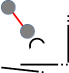

layout: true <div class="header"><img src="https://rosin-project.eu/wp-content/uploads/rosin_ack_logo_wide.png" style="background-color:transparent"/></div> <div class="footer"><img src="https://www.ipa.fraunhofer.de/content/dam/ipa/ipa.svg" /><p>© Fraunhofer IPA</p></div> <div class="triangle"></div> --- class: center, middle name: main_title # Navigation using ROS 2 ## Mapping <img src="../static/Map_cost.png" alt="Map_cost" style="height:300px" class="image-center"/> --- # SLAM - Simultaneous Localization And Mapping <img src="../static/Mapping.png" alt="Intro" style="width:500px" class="image-center"/> --- ## Mapping - SLAM * SLAM: Estimate the pose of a robot and the map of the environment at the same time * Localization: inferring location given a map * Mapping: inferring a map given location * SLAM: learning a map and locating the robot simultaneously * The goal of SLAM is to create or enhance an environment map. * Maps represent the environment, either 2D or 3D. * Is actually a tough problem to solve! --- ## Mapping - SLAM ### Algorithms * Filtering: * Particle filter (Gmapping eloquent), EKF(extended Kalman filter) * Model the problem as Online state estimation * Smoothing: * Full trajectories are estimated using a set of measurements * Graph-based SLAM, e.g. Pose graph optimization (Cartographer, SLAM toolbox, Karto SLAM) --- ## Mapping - SLAM #### Pose graph .cols[ .fifty[ <img src="../static/slam_case.png" alt="slam_case" style="height:120px" class="image-left"/> ] .fifty[ <img src="../static/slam_case_no_error.png" alt="slam_no_error" style="height:120px" class="image-left"/> ] ] .cols[ .fifty[ Robot(yellow circle) move in a close space with an obstacle(blue circle) ] .fifty[ Ideal situation ] ] .cols[ .fifty[ <img src="../static/slam_case_error.png" alt="slam_case_error" style="height:120px" class="image-left"/> ] .fifty[ <img src="../static/slam_case_errors.png" alt="slam_case_errors" style="height:120px" class="image-left"/> ] ] .cols[ .fifty[ Robot with an accurate Lidar, but odometry with large uncertainty (Grey circle: estimated pose) ] .fifty[ Robot continues moving around ] ] --- ## Mapping - SLAM #### Pose graph .cols[ .fifty[ <img src="../static/slam_case_error.png" alt="slam_case_error" style="height:120px" class="image-left"/> ] .fifty[ <img src="../static/slam_case_errors.png" alt="slam_case_errors" style="height:120px" class="image-left"/> ] ] .cols[ .fifty[  ] .fifty[ <img src="../static/slam_loop_closure.png" alt="slam_loop_closure" style="height:120px" class="image-left"/> ] ] .cols[ .fifty[ Pose graph (node of graph: pose, encoded The edges between the nodes: measurement information ] <!-- node: environment measurement associated with robot pose --> .fifty[ Loop closure ] ] Optimization: find the node configuration that will have the smallest error with respect to the measured data. <!-- Diagram-based SLAM algorithms are typically more effective than other approaches during the long-term map maintenance and as well as during the large- scale surroundings mapping. --> --- ## Mapping - SLAM ### Types of maps .cols[ .fifty[ <img src="../static/grid_map.png" alt="grid_map" style="height:210px" class="image-left"/> ] .fifty[ <img src="../static/graph_map.jpg" alt="graph_map" style="height:210px" class="image-left"/> ] .fifty[ <img src="../static/feature_based_map.png" alt="feature_map" style="height:210px" class="image-left"/> ] ] .cols[ .fifty[ Grid based 2d map ] .fifty[ Graph based ] .fifty[ Feature based map (Zhang & Xie & Adams, 05). <!-- Given: Observations of nearby features, Estimate: Map of features, path --> ] ] [source](http://ais.informatik.uni-freiburg.de/teaching/ss12/robotics/slides/12-slam.pdf) --- ## Mapping - SLAM ### grid-based map (2D/3D) * Binary Occupancy map * Probability is calculated for each grid cell (Bayes filter) .cols[ .fifty[ <img src="../static/turtlebot_map.png" alt="grid_map" style="height:200px" class="image-center"/> ] ] * Cell is occupied: 1 * Cell is not occupied: 0 * No knowledge = 0.5 --- ## Mapping - SLAM ### Octree * Tree-based data structure * Each voxel in an octree represents the space contained in a cubic volume. * The minimum voxel size determines the resolution of the octree. <img src="../static/point_cloud_tree.png" alt="point_cloud_tree" style="height:150px" class="image-left"/> <img src="../static/voxel_resolutions.png" alt="point_cloud_tree" style="height:150px" class="image-left"/> <img src="../static/octree.png" alt="point_cloud_tree" style="height:150px" class="image-right"/> Occupied voxels are displayed in resolutions 0.08 m, 0.64 , and 1.28 m. source: [OctoMap](http://www.arminhornung.de/Research/pub/hornung13auro.pdf) --- ## Mapping - SLAM ### ROS2 tools SLAM for ROS2 unfortunately does not have a golden standard yet. Some contenders are: * LaMa (2D) - IRIS Labs - efficiency, SLAM (scan matching), particle filter SLAM, scan matching base Localization <!-- the comparison of the scanned data, called scan matching with already created map or other scanned data. Hector SLAM --> <!-- The goal of scan matching is to find the relative pose (or transform) between the two robot positions where the scans were taken --> * Cartographer (2D/3D) - Google - Ported from ROS 1, used often * SLAM Toolbox (2D) - Steve Macenski - Currently shipped with Navigation2, needs support. [Help if you can!](https://discourse.ros.org/t/slam-toolbox-the-new-default-slam-implementation-for-ros2/12369) (LaMa vs SLAM Toolbox)[https://www.youtube.com/watch?time_continue=48&v=Cgcl3LcFnEs&feature=emb_logo] --- ## Mapping - SLAM ### 2D SLAM Video <video src="../static/2d_mapping.mp4" style="height:300px"></video> It used a monocular camera. The system localizes the camera, builds new map and tries to close loops It also support for RGB-D camera and stereo camera. [Source code, ROS1](https://github.com/raulmur/ORB_SLAM2) --- ## Mapping - SLAM ### 3D SLAM Video <video src="../static/3d_mapping.mp4" style="height:300px"></video> IMU + 3D Lidar [Cartographer 3D SLAM example](https://github.com/inkyusa/cartographer_kitti_config) --- ## SLAM - Questions ?